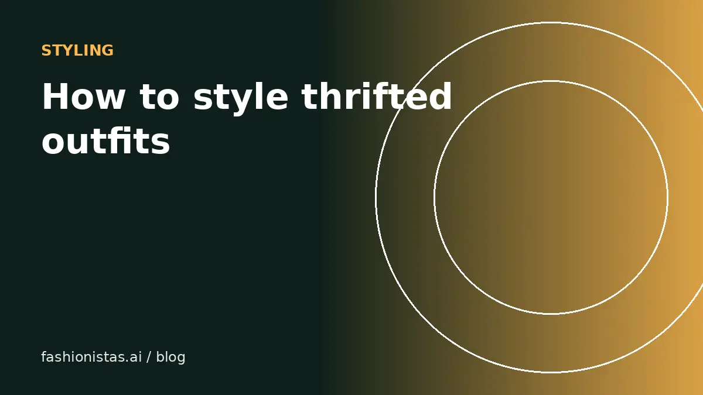

How to style thrifted clothes so your outfits look intentional

Thrifted outfits look great when they look chosen, and less great when they look like whatever was on the rack. The difference usually isn't the clothes; it's a handful of styling habits. Here's how to build outfits around secondhand pieces, mix eras, fix fit, and decide what to buy in the first place.
Build around one statement piece
The easiest formula: one interesting thing, everything else simple.
A bold vintage blazer, a printed 1970s blouse, a leather jacket or a pair of unusual boots can carry an outfit. Pair it with basics: plain T-shirts, straight jeans, simple knits, clean sneakers or loafers. When everything is a statement, outfits look like costumes. When one thing is, it looks like style.
This also makes thrifting easier. Keep a small set of good basics, and look for statement pieces when you shop secondhand.
Fit is everything
The single biggest difference between thrifted outfits that look expensive and ones that don't is fit.
- Shoulders on jackets and blazers should sit at your shoulder edge. Shoulders are hard to alter, so get them right when buying.
- Sleeves and hems are easy and cheap to alter at a tailor.
- Waists on trousers and skirts can usually be taken in.
- Oversized on purpose looks intentional when one piece is oversized and the rest is fitted, for example a big blazer over slim trousers.
A $10 thrifted blazer with a $15 sleeve alteration often looks better than a new blazer straight off the rack. Our size conversion guide helps you buy close to your fit online.
Mix eras on purpose
Mixing a vintage piece with modern basics usually looks better than head-to-toe vintage, which can read as a costume.
- A 1980s silk blouse with modern straight-leg jeans.
- A 1990s slip dress with a current chunky knit and sneakers.
- Vintage workwear jacket with modern tailored trousers.
- Y2K accessories, like small shoulder bags or tinted sunglasses, with a simple contemporary outfit.
If you're not sure how old something is, our guide to dating vintage clothing helps.
Work with color
- Neutrals as a base: black, white, gray, navy, camel, olive and denim go with almost everything, and they're plentiful secondhand.
- One accent color per outfit is easy to pull off; two complementary accents is more advanced.
- Tonal dressing (different shades of one color, like cream, oatmeal and camel) looks considered and is easy to build from thrift finds.
- Prints: pair a print with solids pulled from the print's colors.
Try-on helps here. Colors look different on you than on a hanger; virtual try-on shows whether a shade suits you before you buy.
Shop with a plan
Thrift stores and resale apps are overwhelming without a plan.
- Keep a short note on your phone of gaps in your wardrobe: "black ankle boots", "camel coat", "white button-down".
- Learn your measurements and keep them handy for online buying. See how to measure clothes.
- Look at fabric labels: wool, cashmere, silk, linen and leather age well.
- Check condition carefully: underarms, collars, seams and zippers.
- Ask yourself: can I name three things I own that this goes with?
Online, save searches for the specific items on your list. Our guide to buying secondhand online safely covers checking sellers and listings.
Outfit formulas to start with
- Vintage blazer + T-shirt + straight jeans + loafers. Works almost anywhere.
- Slip dress + oversized knit or denim jacket + boots or sneakers.
- Workwear jacket + plain hoodie + trousers + sturdy boots.
- Silk or satin blouse + high-waist trousers + simple flats.
- Graphic or band tee + tailored trousers + clean sneakers, a good way to wear a vintage tee as an adult.
- Knit vest over a button-down + wide-leg trousers.
Swap one piece at a time as you thrift more, and the outfit evolves without you needing a whole new wardrobe.
Accessories do the heavy lifting
Accessories are some of the best things to buy secondhand: they're cheap, fit doesn't matter much, and they change an outfit instantly.
- Belts define the waist on oversized vintage pieces and add polish to jeans.
- Bags: a structured leather bag makes a simple outfit look finished. Vintage leather often beats new at the same price.
- Scarves: silk scarves are plentiful in thrift stores and work as neck scarves, headbands or bag ties.
- Jewelry: vintage costume jewelry is a quick way to add personality.
- Shoes: clean, simple shoes keep a busy thrifted outfit grounded.
If an outfit feels unfinished, the missing piece is usually an accessory, not another garment.
Caring for thrifted clothes so they keep looking good
- Wash new finds before wearing, following the care label. For delicate vintage, hand wash or dry clean.
- De-pill knits with a fabric shaver; it makes a sweater look years newer.
- Replace dated buttons on a blazer or cardigan with better ones. It's a cheap, easy upgrade.
- Store knits folded, not hung, to avoid stretched shoulders.
- Steam rather than iron delicate fabrics.
Well-kept pieces also resell better when you're ready to move them on. See our beginner reselling guide.
Styling by body shape and comfort
Forget rules about what you're "allowed" to wear. A better question is what you feel good in. Notice which of your current outfits get compliments or that you reach for most, and look at their shapes: the rise of the jeans, the length of the jacket, the neckline. Then look for those shapes when thrifting. Your own favorites are a better guide than any chart, and virtual try-on lets you test new shapes on your photo without commitment.
A capsule built from thrift
A small capsule of about 15 to 20 pieces in a shared palette (two neutrals plus one accent) is easy to build secondhand and makes getting dressed simple. Thrift the basics first, then add statement pieces.
See it on you before you buy
When shopping resale apps, you can't try things on in a fitting room. Paste the listing link into fashionistas.ai Try it on with your photo to see the piece on you. It's especially useful for statement pieces and colors you're unsure about. If you're decorating too, See in my space does the same for art on your walls.
FAQ
How do I make thrifted clothes look expensive?
Focus on fit, tailor sleeves and hems, choose quality fabrics like wool, silk and leather, and pair one statement piece with simple basics.
How do I mix vintage with modern clothes?
Wear one vintage piece with modern basics. A vintage blazer with modern jeans, or a 1990s slip dress with a current knit, looks intentional rather than costume-like.
What should I look for when thrifting clothes?
Check fit at the shoulders, fabric content, condition at underarms, collars and seams, and working zippers. Shop with a short list of wardrobe gaps.
Is it worth tailoring thrifted clothes?
Often yes. Simple alterations like sleeves, hems and waists are inexpensive and can make a cheap find look custom.
Can I try on thrifted clothes online?
Yes. Virtual try-on tools like fashionistas.ai Try it on let you paste a resale listing link and see the item on your own photo before buying.